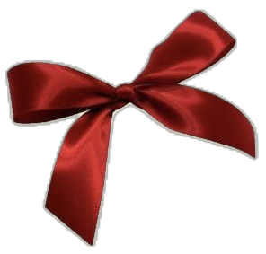
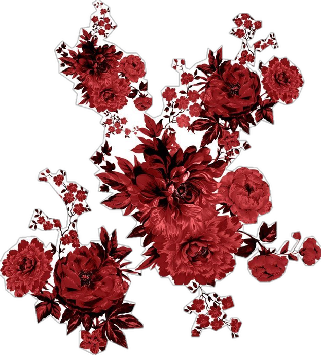

a little corner of the internet, just for you ✧
for yuka ♡
everything i made for you, all in one place.
open them in order, or whichever one you feel like ✦


a little corner of the internet, just for you ✧
everything i made for you, all in one place.
open them in order, or whichever one you feel like ✦